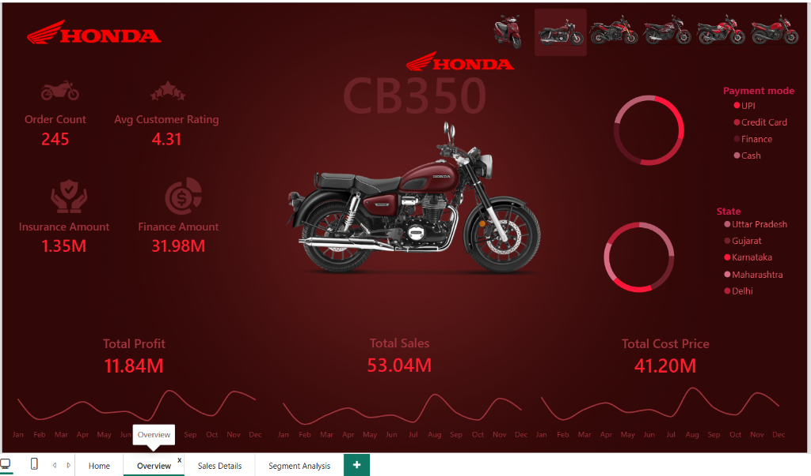

Flagship Pipeline

Click to View Pipeline Architecture
Honda Enterprise
Power BI DirectQuery
Neon PostgreSQL
n8n Automation
DAX
Honda Two-Wheelers Automated Sales Intelligence Pipeline
Zero-cost cloud pipeline syncing nationwide dealership telemetry. Engineered serverless Neon PostgreSQL schemas, automated n8n workflows, and a 4-page Power BI DirectQuery cockpit tracking intraday margins and regional velocity.
KPIs: ₹59.63 Cr Revenue · 5,617 Units · Activa 6G #1 (38% Vol) · 100% Free-Tier Cloud